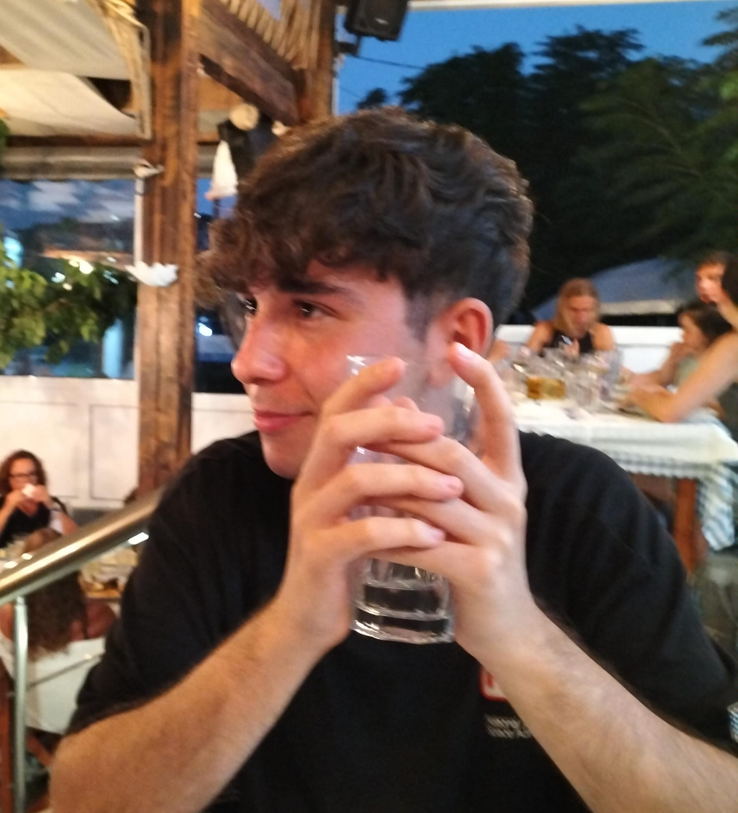

ITIS Marconi Pieralisi Jesi | 5DM
Mi chiamo Andrea Battistini, ho 19 anni e frequento la classe 5DM all'ITIS Marconi Pieralisi di Jesi. Da sempre mi appassiona il mondo dell'informatica, in particolare tutto ciò che riguarda le infrastrutture di rete, lo sviluppo software e la cybersecurity.
Nel corso degli anni ho imparato a lavorare con diversi linguaggi come C#, Java, JavaScript, PHP e Python, sia attraverso i progetti scolastici che per curiosità personale, spesso partendo da un problema concreto che volevo risolvere.
Fuori dalla scuola mi alleno in palestra da quasi due anni, ho ripreso a giocare a tennis da poco e gestisco una community di gaming che nel tempo è diventata un vero e proprio progetto. Ultimamente ho preso l'abitudine di costruirmi piccoli strumenti su misura per automatizzare le cose che faccio ogni giorno.